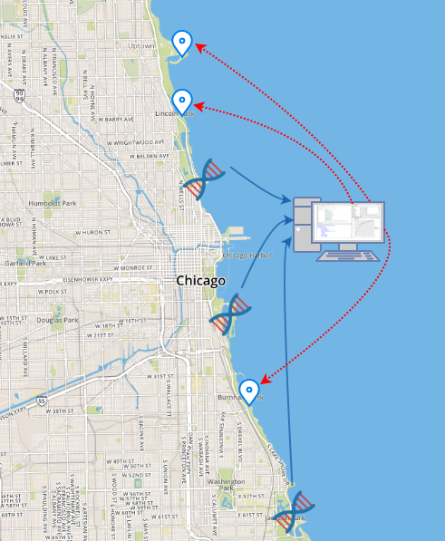

All 26 miles of Chicago's shoreline along Lake Michigan belong to the public. Over twenty public beaches are open to 60 million annual visitors and residents. During the summer months, the cool waters of Lake Michigan provide a respite from the heat.
Most of the time, beach water quality is acceptable. But sometimes, rates of bacteria elevate to a level where swimmers are at risk of contracting an infection and developing flu-like symptoms.
Traditional testing methods do not return results quickly enough to provide realtime water quality notifications, or "beach advisories." Rapid DNA testing methods are available, but are costly when used daily at all beaches. Predictive modeling techniques have been developed, but do not yet provide accurate results reliably.
105
More beach days per year with accurate water quality advisories.
Advisories protect beach visitors from contracting illnesses from waterborne pathogens.
The City partnered with the Chicago Park District, volunteer data scientists, and students at local universities to build a better predictive model for forecasting beach water quality. In the process, the team developed an innovative new approach to water quality modeling.
Better Forecasts of Water Quality
Despite much effort by scientists and water quality experts, forecasting beach water quality remains a difficult and complex endeavor. There are dozens of suspected contributors to contamination. Our team of data scientists developed machine learning models to explore environmental patterns that lead to elevated bacterial contamination. Through this research, the team better understood the limits of forecasting water quality this way, and developed a new way to forecast water quality.
Predictors of Beach Water Quality
- Air Temperature
- Rain Intensity
- Rainfall Total
- Barometric Pressure
- Humidity
- Dew Point
- Wind Direction
- Wind Speed
- Water Temperature
- Water Level
- Wave Height
- Turbidity
- Cloud Cover
- Moon Phase
- Day of Year
- Day of Week
- Month
- Sunrise/Sunset Times
- Solar Radiation
- Lock Openings
During the 2015 and 2016 swim seasons, the Park District used a model developed by the USGS for beach advisories. Our team's analysis of that model showed that when water quality was below acceptable levels, the model only issued an advisory between 6% and 11% of the time. In other words, it mostly failed to warn the public when water quality was poor.
The team initially set out to better predict water quality using a similar model with more data and the latest data science techniques. After exploring relationships among variables, the team piloted a model in 2016 to predict water quality. Simulations showed that our model would have issued advisories about 10% of the time.
Lessons learned while exploring variables led the team to experiment with a new approach to forecasting water quality. The new approach takes advantage of new rapid testing technology. By using rapid results for a handful of beaches, simulations show that our model would issue accurate advisories about 20% of the time, a twofold improvement on the prior model.
Our new modeling approach, coupled with a data-driven strategy for selecting beaches for rapid testing, has resulted in a cost-sensitive hybrid method for monitoring beach water quality. The team is conducting a pilot of the method for 2017, and so far it would have notified the public of 105 beach days that prior modeling techniques would have missed.
Innovative Science
Prior efforts to forecast beach water quality have adopted a similar approach. They collected current enviromental data near a swimming site, and then predicted the contamination levels based on historical environmental data. The team's exhaustive efforts resulted in a conclusion that this approach to modeling is limited by the complexity of causes of poor water quality.
The new approach takes advantage of new rapid DNA testing and the lessons learned from our data exploration efforts. First, 5 beaches contribute to about 56% of poor water quality beach days. These beaches, which are some of the hardest to predict, should be routinely rapid tested due to their volatility. Second, water quality patterns at the remaining beaches are correlated into clusters. In the new approach, one beach from each of these clusters would be rapid tested as predictors. The remaining beaches would be predicted by the model.
A key feature of the approach is that it should not be any more costly than the prior approach of ordering daily culture tests, which take nearly a day to complete. Yet it performs better and provides more accurate notifications to the public.
Innovative Modeling Approach

Evaluating the Effectiveness of the Model
Simulations were conducted with data from 2006 through 2016, using cross-validation and leave-one-year-out validation. Pilots were conducted with models trained and tuned prior to the start of the pilot, allowing the model to be tested against actual future data.
For summer 2017, the Park District used limited grant funding to order a rapid test for each beach on each day. Due to the availability of rapid testing, no predictive model was used for real-time beach advisories in 2017. Therefore, the 2017 pilot was evaluated againt the prior model's peformance in 2015 and 2016.
By mid-summer 2017, 66 days of swimming had occurred at 20 beaches, for a total of 1320 beach days. Poor water quality conditions existed on 162 of those beach days. The piloted model, paired with selective rapid testing, would have issued advisories for 114 of those days.
On average, in 2015 and 2016 the prior model in use would have issued advisories for only 9 out of 112 poor water quality days by mid-summer. The new hybrid model-testing method would have issued advisories for 105 more beach deays than the prior version. Further, as more data on rapid testing is accumulated, the new model's performance should perform even better.
The new model itself has better overall accuracy of predicting poor water quality. In 2017, the piloted model has an accuracy rate of 12%, which is 200% higher than the USGS's accuracy rate of %4 under similar conditions. By performing clustering algorithms to optimize the selection of predictor beaches, simulations show it might be possible to improve accuracy to 20%.
This new approach to beach water quality forecasting requires a choice to be made: which beaches are tested, and which beaches are predicted. Of course, the team takes a data-driven approach to this decision, and has run clustering algorithms to make the best choice. To help illustrate the tradeoffs involved in the choice, the team developed a visualization app that allows you to make your own choice. Can you build a better model? Try it out here.
Preview of Shiny App

Collaboration & Open Science
The Clear Water Project was a collaborative work, which began as a breakout group at Chi Hack Night, a weekly meetup of people interested in civic tech. Data scientists volunteered over 1000 hours, and the City also partnered with students at DePaul University to develop data visualizations.
Clear Water is also made available as an open source project. An open source approach helps build a foundation for other models attempting to forecast violations at food establishments. The analytic code is written in R, an open source, widely-known programming language for statisticians. There is no need for expensive software licenses to view and run this code.
Open sourcing the code also allows for collective advancement. The open source code contains the necessary data to let others test and try to improve upon the current analytic method. The project is also documented in a reproducible format, allowing researchers to read a description of the research and view its underlying calculations. The repository contains everything that is needed to let a community of researchers refine and derive better models.
Food Inspection Model on GitHub